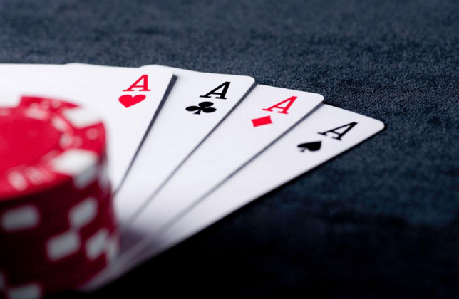

【导读：自去年游戏版号新政实施以来，广电总局一直在加强对手机游戏的监管。近日，笔者得到消息称，广电总局针对部分已经获得版号的游戏进行复查。而版号代办机构的知情人声称：此次复查主要针对涉及赌博色情、送报审查版本与上线版本不一致的现象。并且已经有多款游戏因为涉赌等原因已经被撤销游戏版号了。】
“涉赌”游戏取消版号，广电总局严查棋牌游戏
2016年，棋牌游戏在手游行业整体低迷的市场背景下异军突起，更因几起天价收购案而被推到风口浪尖。有人说广电总局的此次复查行动，是对棋牌游戏的当头棒喝。针对这一情况，我们采访到了国内知名棋牌游戏开发公司——纹桃科技创始人之一胡穗华。

广电总局复查游戏版号，“涉赌”游戏一律取消版号，对这事你怎么看？广电总局复查游戏版号，“涉赌”游戏一律取消版号，对这事你怎么看？
“我记得广电总局要求上架游戏必须获得游戏版号，是从去年6月开始的，要求在6月份之后出版的游戏，必须要有游戏版号才能上线运营，才能够上架安卓市场或Appstore。而在这个政策之前上线的那些游戏，是没有做违规处理的。为什么广电总局会再搞一次所谓针对“涉赌”游戏的复查呢？原因主要有两个：
一是在去年6月份之前上线的游戏，本身就有很多违规的现象。也就是说广电总局此次复查行动，很大程度上针对的是这一部分游戏。二是在上架游戏的时候，其实是有很多技术手段可以用来规避审查的。比如说，我现在上线一款游戏，在提交审核的时候，所有游戏内容都是正常的、合法的。而在通过审查后，我想添加什么游戏功能，游戏内容，其实第三方监管机构（App store，应用商店）基本上监管不到的。”
胡穗华笑道：“从去年广电的游戏版号政策差不多已经有一年时间了，在这种情况下广电总局来这么一次复查，其实是挺正常的。”
在你看来，是一个怎样的信号？
“其实在我看来，现在很多媒体有点小题大做了。政策一有点风吹草动，就想搞个大新闻。其实在棋牌游戏行业，基本上每年一过完年，还有年中七八九月份的时候，都会对涉黄涉赌内的文化作品有这么一个检查。昨天还有员工问我，是不是跟315也有一定的关系。”
胡穗华顿了一下，而后说道：“当然，这只是我个人的观点，我只是根据我以往的经验来判断此次事件背后的信号。毕竟在中国，只要你涉赌涉黄，广电总局能查，文化局能查，网监也能查。所以在我看来，这次复查事件并不是什么坏消息，他对行业其实是起一个规范作用的，这一点我们后面再提。
你觉得这个政策出来，如果你是运营商，你会怎样应对？
胡穗华稍微思考了一下说：“我这么跟你说吧，中国的棋牌游戏其实基本上都是打着擦边球在做运营。但是我这么多年的行业经验让我了解到，你离这个‘擦边球’越远，其实你会运营的更好。我想这可能出乎很多人的意料，但事实确实如此。棋牌游戏有几大特质，你说它是绿色网游，它也算。偶尔跟亲朋好友在网上斗斗地主，打打麻将，这是很开动脑筋，有益身心健康的。但有些棋牌游戏，比如最近复查的那些就涉赌，是吧。所以它的面是非常宽的，关键看运营者怎么把握。”
“最好的应对手段是什么？作为运营者，最好的应对方式其实应该是尽量往正轨上走，不要做违反法律的事情。因为目前的棋牌游戏行业，大量资本的进驻已经是非常明确的态势了。换句话说，行业的火烧的越来越旺了。如果你继续用一些违法的运营手段，可能一时能获得很大的收益，但从长远看来，其实是得不偿失的。特别是如果你已经拥有一定的用户基础，和运营经验的情况下，真的不需要操之过急。所以我认为那些涉赌游戏该下架还是得下架，只有这样，整个行业才会越来越规范，走得更长远。”
这种具有涉赌嫌疑的地方棋牌，会因为国家的这次的政策打压而受到怎样的影响吗？
“这个问题其实有点旧话重提了，在之前的采访中我曾经说过，就我了解到的地方棋牌，百分之八十其实是不涉及赌博的。比如说最具地方特色的湖南字牌，那些老爷爷老太太在家里打个一两块钱的字牌，你要报警抓他吗？如果要抓的话，你去湖南一抓一大把。真的，可能一线城市的人感受不到这种风气。你去湖南，到处都能看到有打字牌的，几毛钱一侃（字牌计数单位）也照样大把人玩。这种你去报警，人警察会觉得你神经病的。”
胡穗华话锋一转：“可回到网上，大家就觉得它涉赌了。如果按照这种说法的话，那么斗地主也是地方棋牌，也应该算涉赌。”胡穗华笑道：“所以说真正中国传统意义上的牌类游戏，比如说地方麻将、地方扑克等，我们没有看到国家有打压的政策倾向。但那些下注类，转盘类等赌运气的游戏，国家一直都是明令禁止的。”
“总的来说在我看来，这并不是国家的政策打压，也就不存在有什么影响。而且就我目前掌握到的资讯来看，准备进入棋牌游戏市场的客户不但没有因为此次事件减少，反而在不断增多。”
因为地方棋牌的野蛮生长，连网易都在布局这个市场，你怎么评价包括资本和非棋牌从业者纷纷布局转型去地方棋牌的举动，这背后是怎样的逻辑，又存在着怎样的风险？
“其实说实话，用野蛮生长这个词来形容棋牌行业，还真不恰当。棋牌游戏一直都在‘生长’，只是出了个闲来，引起了资本市场和广大创业者的关注。网易布局市场这个先不谈，各种资本和非棋牌从业者纷纷布局棋牌市场，像世纪游轮305亿收购以色列棋牌公司，昆仑20亿收购闲来，这些都是新闻爆出来的，还有更多在水下酝酿的大家还不知道。我在最近一段时间，是真的看到太多太多。特别是游资方、金融领域的投资者，带着大笔资金准备进入这个市场。千万级别的常见，过亿的也不少。当然，这些资本方准备布局的肯定不仅仅是地方棋牌，而是一种全新的模式。当然这种全新的模式是怎样运营，玩法是怎样的，我清楚，但在这里我先不谈。只能说这种模式很有活力，足够再颠覆市场一次。”
“像这种大公司，比如网易，布局棋牌游戏这个市场，他本身是非常有优势的。棋牌游戏最重要的是什么？不是研发，是用户，是运营，棋牌游戏不比其他网游，只要有用户存在，商业模式合理，盈利就是必然的，它的利润只会往上涨，不会往下跌。就像上次采访时我说的，你把一家超市开在一个十字路口，想亏损都难。而网易这种级别的公司本身就有很庞大的用户群体，他要做的肯定是全国市场，像腾讯，像闲来。这里很多人认为闲来做的是地方棋牌，其实准确来说，闲来做的其实是全国范围内的地方棋牌。”
“当然，进入这个行业的风险肯定是存在的。但是我相信，前期进入这个行业的公司，成功率会比后面进来的要高出几倍，甚至数十倍。因为像这些游资方，金融领域的投资者，是带着已有模式，已有用户进来的，所以前者是有基础的，是有一定爆发力的。在可预期的未来，还会有更多的入局者。而我认为，只有在预期收益高于风险很多倍的情况下，才会有这么多资本进入这个市场。”
如果国内未来加强对这块的把控，海外的“约局”将有可能火起来，这是否是一种趋势？
“首先，国家对网上赌博从来都是严加把控的，从来就没有松懈过，所以这个问题实际上是不成立的。另外，海外的“约局模式”其实早就已经有人在运营了。但海外的运营，其实它分几种方式。第一种方式是，你的操盘人在海外，你的用户玩家在国内。第二种方式，你的操盘人在海外，你的用户玩家是海外华人华侨。”第三种方式，你的操盘人在海外，你的用户玩家是他国公民。
“第一种方式，肯定是可行的。海外经营博彩、赌博网站其实差不多就是这种模式。但是要考虑到一定的政策风险。第二种方式，就我个人十三年的行业经验来看，收效甚微，没有国内火爆，而且收益非常差。曾经有客户尝试过，具体运营情况就不说了，只能说是举步维艰。你要问我在海外闲来模式是不是一种趋势，我只能说，要看你的用户群体来自哪里。第三种方式，用户群体纯老外，这种运营起来就更难了，外国人他更喜欢老虎机，转盘类游戏，当然牌类游戏也有。但是国外打牌的风气，与国内相比根本是天差地别。我曾经专门了解过欧洲市场、南美市场、北美市场，跟中国的不是一个层级上的东西。所以总的来说，你的用户群体，决定了你约局模式的成功率。”
“闲来”模式的风生水起，让海外也兴起了闲来模式，能聊下目前海外闲来模式的现状么？
“其实这个问题刚刚已经聊过了，在去年八九月份的时候，就已经有人在海外运营过“闲来模式”的平台了。有用户群体针对国内玩家的，有用户群体针对海外华人和外国人的。针对国内玩家的刚刚说过了，具备一定可行性，但如果有其他违规功能的话还是有一定政策风险的。如果你的用户群体所在国家本身就可以赌牌的，闲来模式又有什么优势呢？像东南亚有些国家甚至“黄、赌”都是合法的，我还搞什么闲来模式，我想怎么搞都行，百家乐、赌大小、真人视频，哪个不比闲来模式更有吸引力，对吧。”
“如果用户群体所在的国家是禁止赌博的呢？就我了解像法国、意大利都是禁赌的，在这种国家闲来模式能否行得通呢？回答这个问题之前，首先大家需要明白一点，闲来模式成功的关键是什么？是他基于微信和线下的代理模式。如果所在国家的用户本身就较少，可能大家会更倾向于陌生人之间的棋牌游戏。毕竟在一个禁赌的国家，一个赌风不盛行的国家推行闲来的这种代理模式，我觉得非常难。
胡穗华总结道：“所以我个人认为，闲来模式在国外并不太适合，一是有的地区不需要搞闲来模式，闲来模式对当地用户没有吸引力，一是有的地区他的用户群体、社交体系不足以支持闲来模式的运营。所以我认为针对当地商业环境，玩家群体量身打造一套商业模式可能会更好一些。”
“再说回此次复查事件，这其实不过是棋牌游戏行业最微不足道的‘小事件’。棋牌行业经过了这么多年的发展，相关的法律法规越来越健全，行业也越来越规范。再加上强大的资本入驻，在可预见的未来，我认为，这个行业仍将高速发展。”纹桃科技致力于棋牌游戏开发13年，拥有大量开发运营经验和大批成功案例。
想打造一款迅速盈利的棋牌游戏，欢迎咨询QQ/电话热线：18711739336
了解更多棋牌游戏行业信息：在线咨询>>


游戏产品
PRODUCTS

售后服务
SERVICE

技术支持
TECHNOLOGY

运营指导
OPERATING